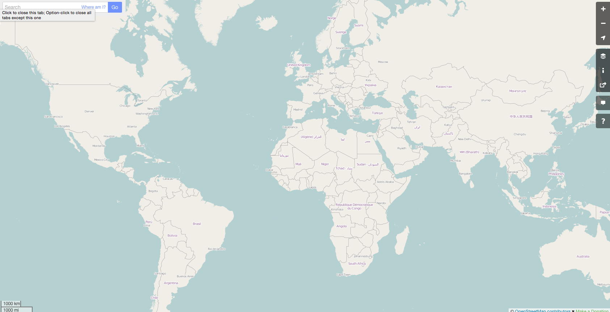
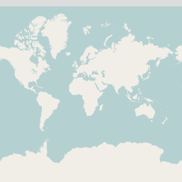
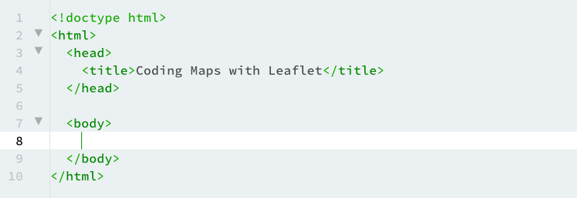
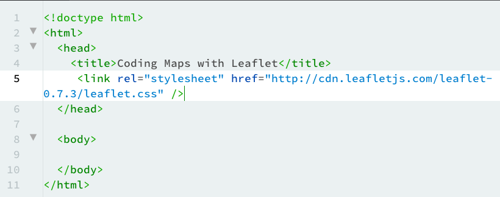
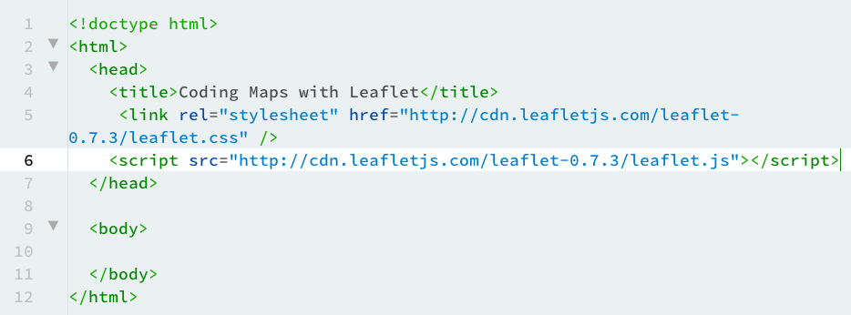
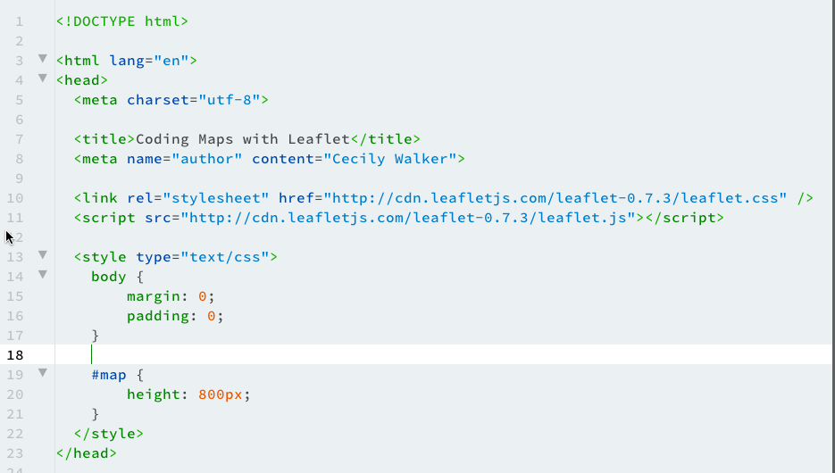

welcome to Coding Maps with Leaflet
You'll learn to build a simple web map using
Leaflet
HTML and CSS knowledge are required, JavaScript knowledge is helpful.
What is a web map?

Web maps are made up of many small images called tiles.
The tiles are usually 256 x 256 pixels in size and are placed side by side to create the illusion of a large, seamless image.
Every zoom level has its own set of tiles. The number of tiles increases exponentially with each level.
Zoom Level 0: 1 tile

Zoom Level 1: 4 tiles
Zoom Level 2: 16 tiles
Zoom Level 3: 64 tiles, etc
Map tiles allow you to zoom in and out at different levels, display tool tips, and pan across an entire map.
This is made possible with JavaScript
There are many different JavaScript mapping libraries available, but today we're going to use
Leaflet to build a map using
OpenStreetMap.
Web maps use feature layers to display interactive elements (like popups and tool tips)
Enough of that - Let's make a web map!
Create Your HTML page
Use whatever text editor you wish.
Coda (Mac),
Atom (Mac, PC, Linux) and
Brackets (Mac, PC, Linux) are all good ones.
Create a new HTML page with this basic structure:

Save your file with an .html extension
Setting up Leaflet
To make the map work, we need to add a link to the Leaflet CSS file.
Add this link to the head of your HTML file:

Next, add a link to the Leaflet JavaScript library to the head of your document:

Lastly, we'll add some of our own CSS to make the map as large or as small as we want.
